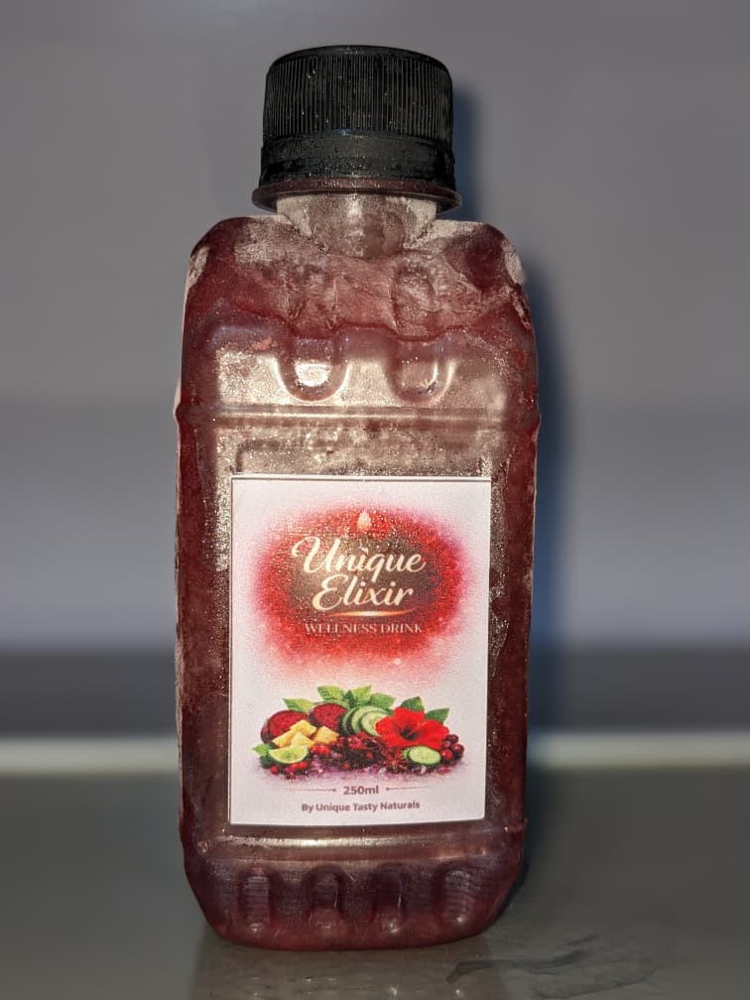
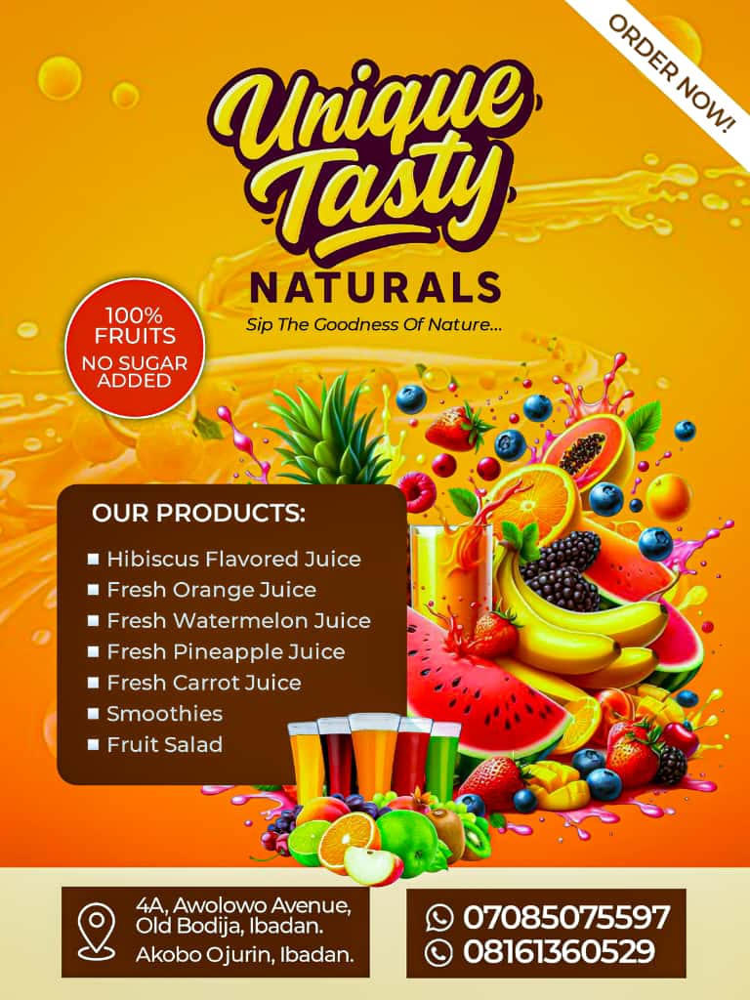
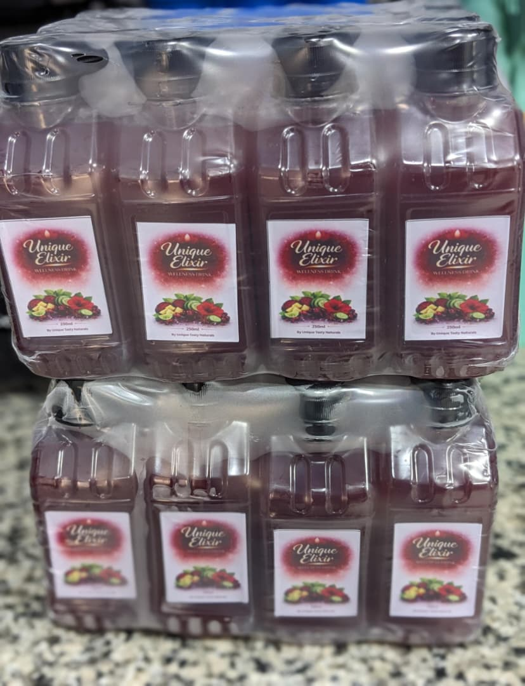
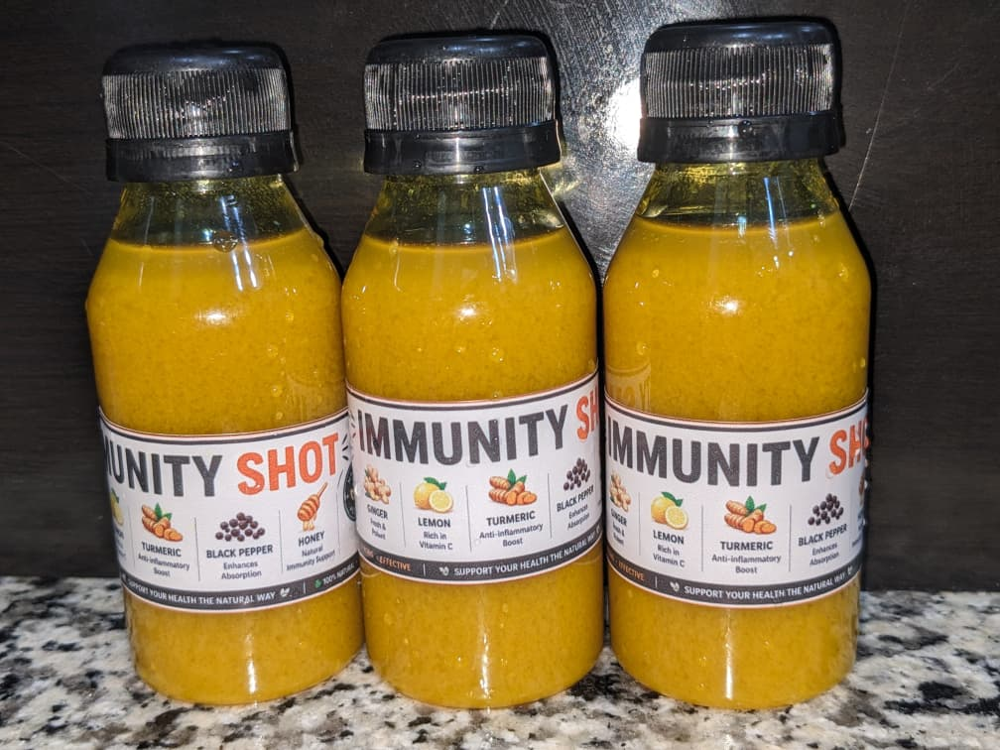

WELLNESS DRINK
Unique Elixir
For everyday nourishment. Beetroot, hibiscus, pineapple, cucumber, lemon, ginger, cinnamon, cloves, and other natural spices.
See packsWhat started as one woman's search for natural wellness in late 2025 became Unique Tasty Naturals: a brand built on the belief that nature truly restores.
Born from a deeply personal journey of healing, in a quiet season of November 2025.

Unique Tasty Naturals was born from a deeply personal journey that began in early November 2025, and was officially established on February 1st, 2026.
It started with a season of health challenges that pushed me to rethink everything I was putting into my body. During that time, I discovered the powerful healing found in nature: simple, raw ingredients like herbs and natural spices. By removing sugar and chemical-filled products and embracing natural wellness, I gradually regained my strength and health.
That transformation didn't just restore my body, it changed my mindset.
Healing doesn't have to be complicated or expensive. Sometimes, it begins with nature's simplest gifts.
Out of that experience came a vision: not just to keep this healing for myself, but to extend it to others and even future generations. I wanted to create something that helps people feel better, live healthier, and reconnect with natural wellness in a real and lasting way.
And that is how Unique Tasty Naturals was born. A brand rooted in healing, passion, and the belief that nature truly restores.

Every bottle of Unique Elixir and every Immunity Shot is prepared at our small facility on Awolowo Avenue, Old Bodija. We also operate from Akobo Ojurin. Local sourcing, local hands, local pride.
We don't run a production line. We work in small batches, on the same day the fruit arrives. We wash by hand, blend by hand, bottle by hand, and label by hand. Nothing is automated except the refrigerator.
This is intentional. Small batch is the only way to keep nutrients alive, control quality, and stay honest about what's inside.
If it isn't a fruit, a root, a herb, a spice, or honey, it doesn't go in the bottle. No flavour compounds, no colour enhancers, no "natural identical" anything. We read every label of every supplier we buy from.
We could grow faster by automating. We won't. Small batch is the entire reason a Unique Elixir feels different on the third day than the orange-coloured stuff on the shelf does on day one.
Our drinks have a herbal note. They have a 3-day fridge life. They're not the sweetest thing you'll taste this year. We tell you that on the label because pretending otherwise is how the rest of the beverage industry got built.
A daily wellness drink for the long game, and a fierce little immunity shot for the days your body needs back-up. That is our entire range. We'd rather make two things properly than ten things halfway.

For everyday nourishment. Beetroot, hibiscus, pineapple, cucumber, lemon, ginger, cinnamon, cloves, and other natural spices.
See packs
For days you need back-up. Ginger, turmeric, lemon, black pepper, and raw honey. One small bottle, big effect.
See packsIf you're in Ibadan, you can pick up directly. Walk in, taste a fresh batch, and meet the small team behind the bottle.
4A Awolowo Avenue, Old Bodija, Ibadan. Our main production kitchen and pickup point.
Akobo Ojurin, Ibadan. Our second pickup point, useful if you're on that side of town.
Pick up your first bottle, build a custom order, or simply send us a hello on WhatsApp.